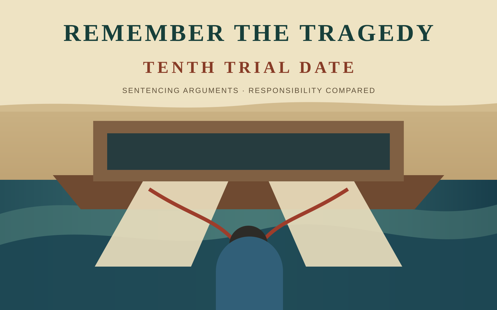

The prosecution and defence presented their positions on punishment.

Court record · Summary
Tenth Trial Date
Sentencing arguments and a comparison of responsibility between the two defendants.
What this summary covers
The record places the two defendants’ sentencing positions side by side.
The reconstructed full court-watch record is published in Traditional and Simplified Chinese.
Language note: A complete English translation is not currently published. This page preserves the English route, summary, and artwork without presenting an unreviewed full translation as the official record.